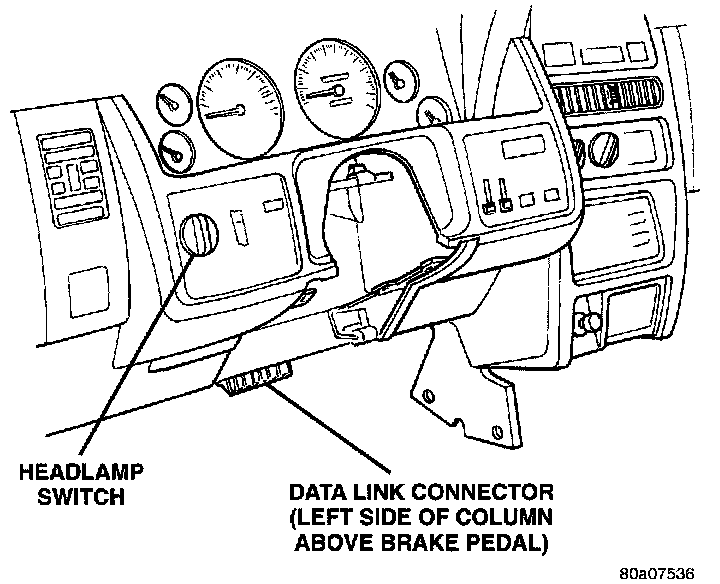

Data Link Connector
DATA LINK CONNECTOR-PCM INPUT AND OUTPUTFig. 14 DLC Location:

The 16-way data link connector (diagnostic scan tool connector) links the Diagnostic Readout Box (DRB) scan tool or the Mopar Diagnostic System (MDS) with the Powertrain Control Module (PCM). The data link connector is located under the instrument panel to the left of the steering column.